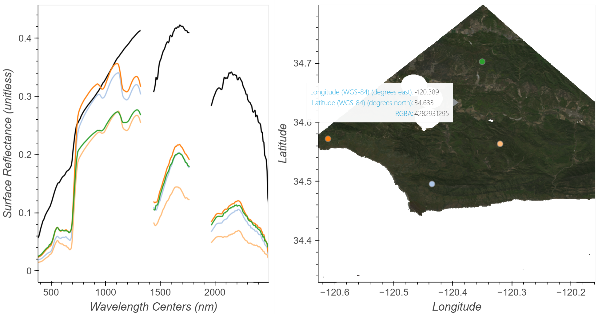

2 Working with EMIT L2A Reflectance and ECOSTRESS L2 LSTE ET Products
Summary
In the previous notebook, we found and downloaded concurrent EMIT L2A Reflectance and ECOSTRESS L2 Land Surface Temperature and Emissivity scenes over our region of interest. In this notebook, we will open and explore both datasets to better understand the structure, then we will conduct some common preprocessing routines to make the data usable together, including: applying quality data, reprojecting, placing data on a common grid, and cropping.

Background
The ECOSTRESS instrument is a multispectral thermal imaging radiometer designed to answer three overarching science questions:
- How is the terrestrial biosphere responding to changes in water availability?
- How do changes in diurnal vegetation water stress the global carbon cycle?
- Can agricultural vulnerability be reduced through advanced monitoring of agricultural water consumptive use and improved drought estimation?
The ECOSTRESS mission is answering these questions by accurately measuring the temperature of plants. Plants regulate their temperature by releasing water through tiny pores on their leaves called stomata. If they have sufficient water they can maintain their temperature, but if there is insufficient water, their temperatures rise and this temperature rise can be measured with ECOSTRESS. The images acquired by ECOSTRESS are the most detailed temperature images of the surface ever acquired from space and can be used to measure the temperature of an individual farmers field.
More details about ECOSTRESS and its associated products can be found on the ECOSTRESS website and ECOSTRESS product pages hosted by the Land Processes Distributed Active Archive Center (LP DAAC).
The EMIT instrument is an imaging spectrometer that measures light in visible and infrared wavelengths. These measurements display unique spectral signatures that correspond to the composition on the Earth’s surface. The EMIT mission focuses specifically on mapping the composition of minerals to better understand the effects of mineral dust throughout the Earth system and human populations now and in the future. In addition, the EMIT instrument can be used in other applications, such as mapping of greenhouse gases, snow properties, and water resources.
More details about EMIT and its associated products can be found on the EMIT website and EMIT product pages hosted by the LP DAAC.
References
- Leith, Alex. 2023. Hyperspectral Notebooks. Jupyter Notebook. Auspatious. https://github.com/auspatious/hyperspectral-notebooks/tree/main
Requirements
- NASA Earthdata Account
- No Python setup requirements if connected to the workshop cloud instance!
- Local Only - Set up Python Environment. See setup_instructions.md in the /setup/ folder
- Local Only - Downloaded necessary files. This is done at the end of the 01_Finding_Concurrent_Data notebook.
Learning Objectives
- How to open and work with EMIT L2A Reflectance and ECOSTRESS L2T LSTE data
- How to apply a quality mask to EMIT datasets
- How to reproject and regrid data
- How to crop EMIT and ECOSTRESS data
Tutorial Outline
2.1 Setup
2.2 Opening and Exploring EMIT Data
2.2.1 Applying Quality Masks to EMIT Data
2.2.2 Interactive Plots
2.2.3 Cropping EMIT Data
2.2.4 Writing Outputs
2.3 Opening and Exploring ECOSTRESS Data
2.3.1 Reprojecting and Regridding ECOSTRESS Data
2.3.2 Cropping ECOSTRESS Data
2.3.3 Writing Outputs
2.1 Setup
Import Python libraries.
# Import Packages
import os
import csv
import warnings
import glob
import math
import earthaccess
import numpy as np
import pandas as pd
import xarray as xr
from osgeo import gdal
import rasterio as rio
import rioxarray as rxr
import hvplot.xarray
import hvplot.pandas
import holoviews as hv
import geoviews as gv
import geopandas as gp
import sys
from modules.emit_tools import emit_xarray, ortho_xr
from holoviews.plotting.links import DataLinkDefine a filepath for an EMIT L2A Reflectance file, EMIT L2A Mask file, and an ECOSTRESS L2T LSTE and ECOSTRESS L2T Mask file. The files selected in this example are from April 1, 2023 at around 20:37.
emit_fp = "../../shared/2023-VITALS-Workshop-AGU/data/EMIT_L2A_RFL_001_20230401T203751_2309114_002.nc"
emit_qa_fp = "../../shared/2023-VITALS-Workshop-AGU/data/EMIT_L2A_MASK_001_20230401T203751_2309114_002.nc"
eco_fp = "../../shared/2023-VITALS-Workshop-AGU/data/ECOv002_L2T_LSTE_26860_001_10SGD_20230401T203733_0710_01_LST.tif"2.2 Opening and Exploring EMIT Reflectance Data
EMIT L2A Reflectance Data are distributed in a non-orthocorrected spatially raw NetCDF4 (.nc) format consisting of the data and its associated metadata. Inside the L2A Reflectance .nc file there are 3 groups. Groups can be thought of as containers to organize the data.
- The root group that can be considered the main dataset contains the reflectance data described by the downtrack, crosstrack, and bands dimensions.
- The
sensor_band_parametersgroup containing the wavelength center and the full-width half maximum (FWHM) of each band.
- The
locationgroup contains latitude and longitude values at the center of each pixel described by the crosstrack and downtrack dimensions, as well as a geometry lookup table (GLT) described by the ortho_x and ortho_y dimensions. The GLT is an orthorectified image (EPSG:4326) consisting of 2 layers containing downtrack and crosstrack indices. These index positions allow us to quickly project the raw data onto this geographic grid.
To work with the EMIT data, we will use the emit_tools module. There are other ways to work with the data and a more thorough explanation of the emit_tools in the EMIT-Data-Resources Repository.
Open the example EMIT scene using the emit_xarray function. In this step we will use the ortho=True argument to orthorectify the scene using the included GLT.
emit_ds = emit_xarray(emit_fp, ortho=True)
emit_dsWe can plot the spectra of an individual pixel closest to a latitude and longitude we want using the sel function from xarray. Using the good_wavelengths flag from the sensor_band_parameters group, mask out bands where water absorption features were assigned a value of -0.01 reflectance. Typically data around 1320-1440 nm and 1770-1970 nm is noisy due to the moisture present in the atmosphere; therefore, these spectral regions offer little information about targets and can be excluded from calculations.
emit_ds['reflectance'].data[:,:,emit_ds['good_wavelengths'].data==0] = np.nanNow select a point and plot a spectra. In this example, we’ll first find the center of the scene and use those coordinates.
scene_center = emit_ds.latitude.values[int(len(emit_ds.latitude)/2)],emit_ds.longitude.values[int(len(emit_ds.longitude)/2)]
scene_centerpoint = emit_ds.sel(latitude=scene_center[0],longitude=scene_center[1], method='nearest')
point.hvplot.line(y='reflectance',x='wavelengths', color='black').opts(
title=f'Latitude = {point.latitude.values.round(3)}, Longitude = {point.longitude.values.round(3)}')We can also plot individual bands spatially by selecting a wavelength, then plotting. Select the band with a wavelengths of 850 nm and plot it using ESRI imagery as a basemap to get a better understanding of where the scene was acquired.
emit_layer = emit_ds.sel(wavelengths=850,method='nearest')
emit_layer.hvplot.image(cmap='viridis',geo=True, tiles='ESRI', frame_width=720,frame_height=405, alpha=0.7, fontscale=2).opts(
title=f"{emit_layer.wavelengths:.3f} {emit_layer.wavelengths.units}", xlabel='Longitude',ylabel='Latitude')2.2.1 Applying Quality Masks to EMIT Data
The EMIT L2A Mask file contains some bands that are direct masks (Cloud, Dilated, Cirrus, Water, Spacecraft), and some (AOD550 and H2O (g cm-2)) that contain information calculated during the L2A reflectance retrieval. These may be used as additional screening, depending on the application. The Aggregate Flag is the mask used during EMIT L2B Mineralogy calculations, which we will also use here, but not all users might want this particular mask.
Note: It is more memory efficient to apply the mask before orthorectifying, so during the automation section we will do that.
emit_mask = emit_xarray(emit_qa_fp, ortho=True)
emit_maskList the quality flags contained in the mask_bands dimension.
emit_mask.mask_bands.data.tolist()As mentioned, we will use the Aggregate Flag. Select that band with the sel function as we did for wavelengths before.
emit_aggregate_mask = emit_mask.sel(mask_bands='Aggregate Flag')Now we can visualize our aggregate quality mask. You may have noticed before that we added a lot of parameters to our plotting function. If we want to consistently apply the same formatting for multiple plots, we can add those agrguments to a dictionary that we can unpack into hvplot functions using **.
Create two dictionaries with plotting options.
size_opts = dict(frame_height=405, frame_width=720, fontscale=2)
map_opts = dict(geo=True,alpha=0.7, xlabel='Longitude',ylabel='Latitude')emit_aggregate_mask.hvplot.image(cmap='viridis', tiles='ESRI', **size_opts, **map_opts)Values of 1 in the mask indicate areas to omit. Apply the mask to our EMIT Data by assigning values where the mask.data == 1 to np.nan
emit_ds.reflectance.data[emit_aggregate_mask.mask.data == 1] = np.nanWe can confirm our masking worked with a spatial plot.
emit_layer_filtered_plot = emit_ds.sel(wavelengths=850, method='nearest').hvplot.image(cmap='viridis',tiles='ESRI',**size_opts, **map_opts)
emit_layer_filtered_plot2.2.2 Interactive Spectral Plots
Combining the Spatial and Spectral information into a single visualization can be a powerful tool for exploring and inspecting imaging spectroscopy data. Using the streams module from Holoviews we can link a spatial map to a plot of spectra.
We could plot a single band image as we previously have, but using a multiband image, like an RGB may help infer what targets we’re examining. Build an RGB image following the steps below.
Select bands to represent red (650 nm), green (560 nm), and blue (470 nm) by finding the nearest to a wavelength chosen to represent that color.
emit_rgb = emit_ds.sel(wavelengths=[650, 560, 470], method='nearest')We may need to adjust balance the brightness of the selected wavelengths to make a prettier map. This will not affect the data, just the visuals. To do this we will use the function below. We can change the bright argument to increase or decrease the brightness of the scene as a whole. A value of 0.2 usually works pretty well.
def gamma_adjust(rgb_ds, bright=0.2, white_background=False):
array = rgb_ds.reflectance.data
gamma = math.log(bright)/math.log(np.nanmean(array)) # Create exponent for gamma scaling - can be adjusted by changing 0.2
scaled = np.power(np.nan_to_num(array,nan=1),np.nan_to_num(gamma,nan=1)).clip(0,1) # Apply scaling and clip to 0-1 range
if white_background == True:
scaled = np.nan_to_num(scaled, nan = 1) # Assign NA's to 1 so they appear white in plots
rgb_ds.reflectance.data = scaled
return rgb_ds# Suppress Warnings for Some of the holoviews plots
warnings.filterwarnings('ignore')emit_rgb = gamma_adjust(emit_rgb,white_background=True)Now that we have an RGB dataset, we can use that to create a spatial plot, and data selected by clicking on that ‘map’ can be inputs for a function to return values from the full dataset at that latitude and longitude location using the cell below. To visualize the spectral and spatial data side-by-side, we use the Point Draw tool from the holoviews library.
Define a limit to the quantity of points and spectra we will plot, a list of colors to cycle through, and an initial point. Then use the input from the Tap function to provide clicked x and y positions on the map and use these to retrieve spectra from the dataset at those coordinates.
Click in the RGB image to add spectra to the plot. You can also click and hold the mouse button then drag previously place points. To remove a point click and hold the mouse button down, then press the backspace key.
# Interactive Points Plotting
# Modified from https://github.com/auspatious/hyperspectral-notebooks/blob/main/03_EMIT_Interactive_Points.ipynb
POINT_LIMIT = 10
color_cycle = hv.Cycle('Category20')
# Create RGB Map
map = emit_rgb.hvplot.rgb(fontscale=1.5, xlabel='Longitude',ylabel='Latitude',frame_width=480, frame_height=480)
# Set up a holoviews points array to enable plotting of the clicked points
xmid = emit_ds.longitude.values[int(len(emit_ds.longitude) / 2)]
ymid = emit_ds.latitude.values[int(len(emit_ds.latitude) / 2)]
first_point = ([xmid], [ymid], [0])
points = hv.Points(first_point, vdims='id')
points_stream = hv.streams.PointDraw(
data=points.columns(),
source=points,
drag=True,
num_objects=POINT_LIMIT,
styles={'fill_color': color_cycle.values[1:POINT_LIMIT+1], 'line_color': 'gray'}
)
posxy = hv.streams.PointerXY(source=map, x=xmid, y=ymid)
clickxy = hv.streams.Tap(source=map, x=xmid, y=ymid)
# Function to build spectral plot of clicked location to show on hover stream plot
def click_spectra(data):
coordinates = []
if data is None or not any(len(d) for d in data.values()):
coordinates.append(clicked_points[0][0], clicked_points[1][0])
else:
coordinates = [c for c in zip(data['x'], data['y'])]
plots = []
for i, coords in enumerate(coordinates):
x, y = coords
data = emit_ds.sel(longitude=x, latitude=y, method="nearest")
plots.append(
data.hvplot.line(
y="reflectance",
x="wavelengths",
color=color_cycle,
label=f"{i}"
)
)
points_stream.data["id"][i] = i
return hv.Overlay(plots)
def hover_spectra(x,y):
return emit_ds.sel(longitude=x,latitude=y,method='nearest').hvplot.line(y='reflectance',x='wavelengths',
color='black', frame_width=400)
# Define the Dynamic Maps
click_dmap = hv.DynamicMap(click_spectra, streams=[points_stream])
hover_dmap = hv.DynamicMap(hover_spectra, streams=[posxy])
# Plot the Map and Dynamic Map side by side
hv.Layout(hover_dmap*click_dmap + map * points).cols(2).opts(
hv.opts.Points(active_tools=['point_draw'], size=10, tools=['hover'], color='white', line_color='gray'),
hv.opts.Overlay(show_legend=False, show_title=False, fontscale=1.5, frame_height=480)
)We can take these selected points and the corresponding reflectance spectra and save them as a .csv for later use.
Select 10 points by adding to the figure above. We will save these and use them in a to caclculate Equivalent Water Thickness or Canopy water content in the next notebook.
After making a selection, re-enable warnings to make sure we don’t have issues with other cells in the notebook.
# Enable Warnings again
warnings.filterwarnings('default')Build a dictionary of the selected points and spectra, then export the spectra to a .csv file.
data = points_stream.data
wavelengths = emit_ds.wavelengths.values
rows = [["id", "x", "y"] + [str(i) for i in wavelengths]]
for p in zip(data['x'], data['y'], data['id']):
x, y, i = p
spectra = emit_ds.sel(longitude=x, latitude=y, method="nearest").reflectance.values
row = [i, x, y] + list(spectra)
rows.append(row)We’ve preselected 10 points, but feel free to uncomment the cell below to use your own. This will overwrite the file containing the preselected points.
# with open('../data/emit_click_data.csv', 'w', newline='') as f:
# writer = csv.writer(f)
# writer.writerows(rows)2.2.3 Cropping EMIT data to a Region of Interest
To crop our dataset to our ROI we first need to open a shapefile of the region. Open the included geojson for Sedgwick Reserve and Plot it onto our EMIT 850nm reflectance spatial plot. Note that here we don’t use use tiles – there seems to be a bug preventing this.
shape = gp.read_file("../data/dangermond_boundary.geojson")
shapeemit_ds.sel(wavelengths=850, method='nearest').hvplot.image(cmap='viridis',**size_opts,**map_opts,tiles='ESRI')*shape.to_crs('EPSG:3857').hvplot(color='#d95f02',alpha=0.5)Now use the clip function from rasterio to crop the data to our ROI using our shape’s geometry and crs. The all_touched=True argument will ensure all pixels touched by our polygon will be included.
emit_cropped = emit_ds.rio.clip(shape.geometry.values,shape.crs, all_touched=True)Plot the cropped data.
emit_cropped.sel(wavelengths=850,method='nearest').hvplot.image(cmap='viridis', tiles='ESRI', **size_opts, **map_opts)2.2.4 Write an output
Lastly for our EMIT dataset, we can write a smaller output that we can use in later notebooks, to calculate Canopy water content or other applications. We use the granule_id from the dataset to keep a similar naming convention.
# Write Clipped Output
#emit_cropped.to_netcdf(f'../data/{emit_cropped.granule_id}_dangermond.nc')3.0 Working with ECOSTRESS L2T Land Surface Temperature and Emissivity
For this example we’re only taking a look at the ECOSTRESS Level 2 Tiled Land Surface Temperature (ECO_L2T_LSTE). The Land Surface Temperature and Emissivity values are derived from five thermal infrared (TIR) bands using a physics-based Temperature and Emissivity Separation (TES) algorithm. This tiled data product uses a modified version of the Military Grid Reference System (MGRS) which divides Universal Transverse Mercator (UTM) zones into square tiles that are 109.8 km by 109.8 km with a 70 meter (m) spatial resolution.
Open the LSTE file using open_rasterio from the rioxarray library. Since the file consists of only 1 layer, we can squeeze it, removing the band dimension.
eco_lst_ds = rxr.open_rasterio(eco_fp).squeeze('band', drop=True)
eco_lst_dsAs mentioned the ECOSTRESS product we are using here is tiled and the coordinate reference system (CRS) is dependent on UTM zone. For this tile, we can look at the spatial_ref variable through the interactive object above to see details such as the well-known-text (WKT) representation of the CRS and other attributes.
Now lets plot the data using hvplot. The underlying functions will recognize the CRS and reprojet the scene for our visualization with an ESRI imagery RBG background tile.
eco_lst_ds.hvplot.image(x='x',y='y',**size_opts, cmap='inferno',tiles='ESRI', xlabel='Longitude',ylabel='Latitude',title='ECOSTRESS LST (K)')2.3.1 Reprojecting and Regridding ECOSTRESS Data
We will need to reproject manually to pair this scene with the EMIT data, but we will not need to mask ECOSTRESS, because cloud masking has already been done for the tiled LSTE product.
To give a reasonable 1:1 comparison, in addition to reprojecting we want the data on the same grid, so each pixel from the ECOSTRESS scene corresponds to a pixel in the EMIT scene. To do this, we can use the reproject_match function from the rioxarray library. This will reproject and regrid our ECOSTRESS data to match the EMIT CRS and grid using the spatial_ref variable from each dataset. Since we’ve already cropped the EMIT scene, this will limit our ECOSTRESS scene to the extent of that cropped EMIT scene as well.
eco_lst_ds_regrid = eco_lst_ds.rio.reproject_match(emit_cropped)We can now visualize our reprojected, regridded ECOSTRESS LSTE scene.
eco_lst_ds_regrid.hvplot.image(geo=True, tiles='ESRI',cmap='inferno',**size_opts, xlabel='Longitude',ylabel='Latitude',title='Regridded ECOSTRESS LST (K)')2.3.2 Cropping ECOSTRESS Data
This has been cropped to the extent, but we can further mask data outside of our region of interest by using the clip function like we did for EMIT data.
eco_dangermond = eco_lst_ds_regrid.rio.clip(shape.geometry.values,shape.crs, all_touched=True)eco_dangermond.hvplot.image(geo=True,cmap='inferno',**size_opts, tiles='ESRI',alpha=0.7, title='Cropped ECOSTRESS LST (K)', xlabel='Longitude',ylabel='Latitude')2.3.3 Writing Outputs
We now have a subset ECOSTRESS scene that is aligned with EMIT data that we can export for our use in later notebooks.
Save the ECOSTRESS LSTE scene.
# Uncomment to overwrite included sample
# eco_outname = f"../data/{eco_fp.split('/')[-1].split('.')[0]}_dangermond.tif"
# eco_sedgwick.rio.to_raster(raster_path=eco_outname, driver='COG')Contact Info:
Email: LPDAAC@usgs.gov
Voice: +1-866-573-3222
Organization: Land Processes Distributed Active Archive Center (LP DAAC)¹
Website: https://lpdaac.usgs.gov/
Date last modified: 11-28-2023
¹Work performed under USGS contract G15PD00467 for NASA contract NNG14HH33I.